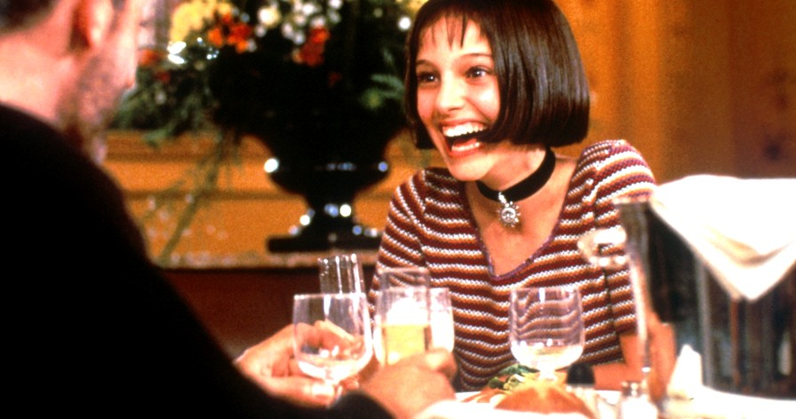
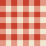

COUPON
Free Glass
of Cold Milk
of Cold Milk
with dinner. Limit two quarts.
The back table. Cold milk, checked cloth, no questions.
Per cominciare

Antipasti
The French Loaf6.50
Crusty bread spread thick with sweet butter, thin boiled ham and little sour pickles, cut in twelve.
Olive Calde4.25
Mixed and warmed in oil with orange peel, thyme and garlic. Cornichons and pickled onions alongside.
Dal banco
Dolci
The Window Pot4.50
Dark chocolate mousse under crushed cookie soil in a little clay pot, fresh mint growing out the top. Likes the sun.
Cannoli3.25
Crisp shells filled to order with sweet ricotta and chocolate chips.
Da bere
Bevande
Vanilla Malted3.75
Whole milk blended thick with ice cream, malt and honey, in a frosted glass.
Cold Milk1.25
Whole, poured tall. A quart to go, 1.94.
Champagne6.50
By the glass, well chilled. Over eighteen only.
Prices subject to change. Thursday nights, a little Beethoven.
Mulberry St., New York, N.Y. 10013. Form 194. 1994.
Mulberry St., New York, N.Y. 10013. Form 194. 1994.